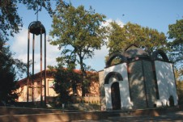

Старозагорските минерални бани са балнеологичен курорт, разположен на 12 км северозападно от гр. Стара Загора, в южните гористи разклонения на Сърнена гора /дял от Средна гора/. Средната надморска височина на котловината, в която е разположен е 360 м., а ограждащите я околни хълмове са с височина от 600 до 800 метра. Покрити са с дъбови, габрови, лескови, липови и засадени борови гори. Климатът на курорта се определя от граничното му местоположение между субтропичната и умереноконтиненталната област и нископланинското му разположение, омекотен от средиземноморското влияние. Зимата е топла, но понякога с обилни снеговалежи. Летните дни са слънчеви, а нощите прохладни и приятни. Ветрове духат рядко, а мъгливите дни през годината са малко.
 Минералната вода излиза на повърхността с дебит 20 л/сек при 42°С. Минералната вода е подходяща за лечение на: опорно-двигателен апарат, периферната нервна система, гинекологични заболявания, бъбречни и урологични заболявания, стомашно-чревни заболявания и др. Днес Старозагорски бани са съвременен балнеологичен нископланински курорт. Уникалната природа, чистият въздух и минералната вода дават възможност за провеждане на цялостна оздравителна профилактика и възстановителна лечебна дейност. В курорта са изградени и функционират над 20 хотела и почивни станции на различни ведомства, разполагащи с много добра материална база и възможности за лечение. Легловата база е с капацитет за настаняване на над 2000 курортисти на ден.
Минералната вода излиза на повърхността с дебит 20 л/сек при 42°С. Минералната вода е подходяща за лечение на: опорно-двигателен апарат, периферната нервна система, гинекологични заболявания, бъбречни и урологични заболявания, стомашно-чревни заболявания и др. Днес Старозагорски бани са съвременен балнеологичен нископланински курорт. Уникалната природа, чистият въздух и минералната вода дават възможност за провеждане на цялостна оздравителна профилактика и възстановителна лечебна дейност. В курорта са изградени и функционират над 20 хотела и почивни станции на различни ведомства, разполагащи с много добра материална база и възможности за лечение. Легловата база е с капацитет за настаняване на над 2000 курортисти на ден.
Курортното селище има сравнително добре изградена и развита инфраструктура. Има красиво езеро и уютни паркове. Осигурена е редовна автобусна линия до общинския център Стара Загора. На територията на селището се намира единствената в област Стара Загора седмична санаториална детска градина № 16 „Горски кът", строена през 1975 година. Разполага с капацитет за около 100 деца. Има две санаториални групи за деца, боледуващи от бронхиална астма и заболявания на горните дихателни пътища. В парк „Дъбова гора" се намира домът за стари хора с капацитет от 100 места, състоящ се от две самостоятелни сгради. Обучен медицински и помощен персонал денонощно обгрижва домуващите, голяма част от които са лежащо болни възрастни и самотни хора.